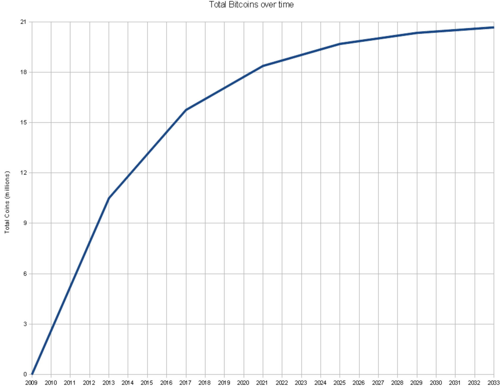
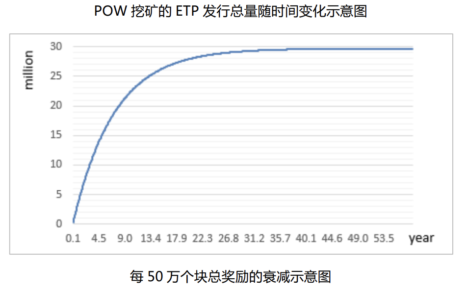

- 00 开篇词 帮你从0到1深入学习区块链技术.md.html
- 尾声篇 授人以鱼，不如授人以渔.md.html
- 新书首发《区块链第一课：深入浅出技术与应用》.md.html
- 第01讲 到底什么才是区块链？.md.html
- 第02讲 区块链到底是怎么运行的？.md.html
- 第03讲 浅说区块链共识机制.md.html
- 第04讲 区块链的应用类型.md.html
- 第05讲 如何理解数字货币？它与区块链又是什么样的关系？.md.html
- 第06讲 理解区块链之前，先上手体验一把数字货币.md.html
- 第07讲 区块链的常见误区.md.html
- 第08讲 最主流区块链项目有哪些？.md.html
- 第09讲 深入区块链技术（一）：技术基础.md.html
- 第10讲 深入区块链技术（二）：P2P网络.md.html
- 第11讲 深入区块链技术（三）：共识算法与分布式一致性算法.md.html
- 第12讲 深入区块链技术（四）：PoW共识.md.html
- 第13讲 深入区块链技术（五）：PoS共识机制.md.html
- 第14讲 深入区块链技术（六）：DPoS共识机制.md.html
- 第15讲 深入区块链技术（七）：哈希与加密算法.md.html
- 第16讲 深入区块链技术（八）： UTXO与普通账户模型.md.html
- 第17讲 去中心化与区块链交易性能.md.html
- 第18讲 智能合约与以太坊.md.html
- 第19讲 上手搭建一条自己的智能合约.md.html
- 第20讲 区块链项目详解：比特股BTS.md.html
- 第21讲 引人瞩目的区块链项目：EOS、IOTA、Cardano.md.html
- 第22讲 国内区块链项目技术一览.md.html
- 第23讲 联盟链和它的困境.md.html
- 第24讲 比特币专题（一）历史与货币.md.html
- 第25讲 比特币专题（二）：扩容之争、IFO与链上治理.md.html
- 第26讲 数字货币和数字资产.md.html
- 第27讲 弄懂数字货币交易平台（一）.md.html
- 第28讲 弄懂数字货币交易平台（二）.md.html
- 第29讲 互联网身份与区块链数字身份.md.html
- 第30讲 区块链即服务BaaS.md.html
- 第31讲 数字货币钱包服务.md.html
- 第32讲 区块链与供应链（一）.md.html
- 第33讲 区块链与供应链（二）.md.html
- 第34讲 从业区块链需要了解什么？.md.html
- 第35讲 搭建你的迷你区块链（设计篇 ）.md.html
- 第36讲 搭建你的迷你区块链（实践篇）.md.html
- 捐赠
第05讲 如何理解数字货币？它与区块链又是什么样的关系？
从历史进程来看，货币的形态主要经历了几次变化。从早期社会如兽皮、牲畜、陶器的物物交换，到各种贝壳类的货币，再到后面的铜币，乃至后来人们选择了黄金和白银作为流通货币。
随着消费需求不断增加，人们发现可以通过发行纸币来替代贵金属，于是，我们就一起进入了信用货币的阶段。后来，技术的发展促进了电子货币的产生。现如今区块链技术的大热，它的第一个应用就是数字货币。
数字货币的概念
数字货币通常是国内的叫法，在国外，它一般称作“加密货币”。数字货币听起来比加密货币更抽象一点，“数字”旨在表现它不同于传统货币的行为，即它可以通过“数字”表现更多自定义的行为。
那么，如何用一句话来解释什么是“数字货币”（加密货币）呢？我们可以这样形容：数字货币通常是基于区块链技术、在全球范围内公开发行的、并且没有任何国家政府背书的虚拟货币，这种虚拟货币具有“去信任”、“点对点”、“公开记账”、“不可篡改”等特征。
既然聊到了虚拟货币，我们正好可以把电子货币、虚拟货币、数字货币（加密货币）的概念捋一捋。
1.电子货币
近年来，现金使用的频度降低，很多人首选使用电子支付。电子货币和数字货币一样都是无形的，但是电子货币其实就是将法币电子化，例如第三方支付平台，银行卡电子现金，银行大小额支付系统等等。它只是以电子的方式记录了原来法币的账目，从本质上来说，它们仍然需要在多个中心化系统中进行稽核、对账，“电子”本身并没有成为金融的一部分。
2.虚拟货币
在2017年区块链投机狂热的时候，“虚拟货币”这个词基本是用来指区块链项目的基础代币，这样的叫法大多源自于圈外投机者。其实不然，虚拟货币所指代的概念远比电子货币以及数字货币都要更加广泛。
虚拟货币通常是由非金融机构发行的非实体货币，大致分为三类。
- 第一类比如游戏代币，通常不与实体经济发生联系。例如在《王者荣耀》这款游戏中，如果你想要得到新的道具，就必须有足够的游戏代币（钻石和点券），这种虚拟货币还有个特征就是封闭性，即只能在这款游戏中使用。
- 第二类是积分类，它可以与实体经济发生联系，比如常旅客积分，超市礼品卡，这种虚拟货币也有个特征叫做单向性，即只能流入，而不能流出。
- 第三类自然就是我们主要讲的数字货币（加密货币）了，比特币便是其中典型。
综合来看，与法币的“有形”对应，虚拟货币更多地体现在它的“虚拟无形”上，随着互联网的发展，虚拟货币本身也在逐渐发展，从而诞生了更多新的模式与机遇。
3.数字货币
数字货币一般是指公有区块链平台底下的基础代币，该代币被记录在由密码学保证的一套公开账本上，与传统货币不同的是，由于去中心化以及可编程等特性，此种货币具有可自定义行为的属性。
在比特币中，我们可以定义多重签名交易来实现真正意义上的“由多人共同掌管的机构型账户”。
比如，在元界上，用户可以自定义交易的行为，例如在转账时可以指定代币的一个锁定期，并且指定解锁条件；而在比特股中，这种行为更被强化为具有衍生品特性的货币，这在传统货币领域是不可想象的。
与数字货币对应的，还有数字资产这个概念，不过这是另外一个话题了，后续我会有详细的讲解。
传统货币与数字货币
正因为数字货币的诸多新特性，所以金融机构和互联网公司纷纷加入研究行列，越来越多的人想要研究数字货币，这里，我想带你对比数字货币和传统货币的不同特性，以便你可以更直观地了解数字货币和传统货币的不同。
匿名性vs实名制
传统货币在支付过程中，除了现金，其他任何方式基本都或多或少地保留了交易者的信息，无论你是个人还是机构，运营商都可以使用这些交易数据来跟踪你的活动。
而在数字货币领域，这件事就无足轻重了，目前大部分数字货币具有假匿名性，即化名性，所以并不会被查到你自己的私人资料。
同时，由于区块链上未提供KYC（Know Your Customer）功能，也就是充分了解你的客户，对账户持有人的强化审查，所以让监管者很难追踪到交易者的信息，也让数字货币成为了黑市交易的温床。
这样的缺点主要是因为不少公链代币设计中没有加入身份的概念，不过这在我这样的技术人的角度来看，只是算是一个需求，而不是数字货币本身存在的缺陷。
点对点vs中心化
数字货币的发行主体通常是项目发起方，并且会在白皮书中定义好数字货币的发行过程；在主网上线以后，所有的代币会根据一开始设计好的发行过程缓慢释放到市场，这个过程其实就是大家喜闻乐见的“挖矿”过程。
所以在主网上线以后，即使作为项目发起方，也几乎很难有权利再次修改发行机制，所有人只能以提案的形式递交到社区进行讨论，讨论的最终结果决定了能否被再次修改。
这个过程其实与民主选举的过程很相似，而在信用货币领域，发行主体通常是央行，央行可以通过货币的政策进行宏观调控，从某种意义上来说，央行模式是中心化的极致体现，而数字货币则属于点对点机制的体现。
自理型安全性 vs 托管型安全性
由于数字货币的交易过程需要网络中每个节点的认可，且每一笔交易都被记录在区块链上，所以历史交易记录永远不用担心丢失或者被篡改。
只要数字货币基础的加密算法不被攻破，并且保护好私钥，你的资产便是真正意义上、只属于你自己的资产。
传统货币的交易过程最终是落到银行的，所以银行系统的安全性决定了传统货币在使用过程中的安全阈值，这也表示你的资产是托管在银行的。
广区域流通vs国家内部流通
传统货币是有主权的，通常只在主权国家范围内流通；数字货币目前却没有这样的限制，只要你能连上互联网，你就可以随时随地发送交易到任意地域。
总结来看，数字货币目前也有很大风险，如今还没有比较完整规范的法律法规来约束数字货币的使用者，所以使用数字货币会有较高的法律与投资的风险。
而且普通人已经接受了信用货币这种设定，目前对数字货币的接受度在各国并不一样，例如在中国大陆接受度低，在日本接受度高。
数字货币的发行过程
数字货币在2016年开始加速，2017年借助ICO呈井喷式发展，数字货币市场形成了一个大泡沫，这与2000年初的互联网泡沫十分相似，但是泡沫并不可怕，它只是一个热门新生事物的必然过程。
我们需要在这个泡沫中找到规律，那么首先就要了解数字货币的发行过程。我们可以以比特币为例子来聊聊它的发行过程。
比特币的发行过程是通过挖矿维持的，是依靠矿工挖矿产生比特币。相当于矿工自己就是一个小型的印钞机。
矿工每挖出一个区块，也就是在第二篇文章中提到的“打包一个信封”，会产生一个Coinbase交易，这个Coinbase交易相当于凭空产生了币，矿工可以从Coinbase获得比特币，作为维护系统的奖励。
Coinbase的产出是每4年衰减一半的，第一个4年是挖出每个块50个比特币，第二个4年的周期就是挖出每块产出25个，目前比特币处于第三个4年，Coinbase产出12.5个比特币的阶段。
以上逻辑是比特币白皮书和比特币代码规定好的，所有比特币的参与者可以进行验证。并且根据以上逻辑，我们可以画出如下的发行曲线。

（图引用自网络）
我们可以看到，比特币的发行过程每隔四年发生一次改变，发行速率逐渐降低，随着时间推移趋于平缓。
同理，我们在其他数字货币项目就可以看到类似曲线，不过它们未必与比特币的发行曲线一样，有可能是离散式的，有可能是线性的，这取决于白皮书中规定的发行过程。
例如熵币ETP的发行过程也是一个衰减过程，不过ETP的衰减系数是0.95，所以相对比特币可以说更光滑了，它随着时间收敛到挖矿总量3000万，那么这个曲线看起来是这样的。

所以数字货币的发行过程可以认为是一个区块链项目的核心利益分配的过程，也是一个社区激励的过程，如何把有限的代币派发给愿意为项目付出的社区人，是考量一个区块链项目运营成熟度的重要指标。
总结
今天，我简单介绍了数字货币，相信你对于数字货币已经有了一个初步的了解，数字货币作为区块链的第一个应用，已经广泛地被人们所熟知，并且大有燎原之势。
除了社区型的非盈利性开源数字货币项目，央行也在推动基于区块链交易平台，同时，由央行发行的法定数字货币也已经在这种平台上开始试运行。
可见数字货币的发展已经是未来的趋势，顺应着这种趋势，作为技术人的我们可以从中看到更大、更复杂的挑战。
这里给你留一个思考题，你可以在数字货币中看见怎样的挑战呢，你可以在下面留言，我们一起交流，感谢你的收听，我们下次再见。
© 2019 - 2023 Liangliang Lee. Powered by gin and hexo-theme-book.